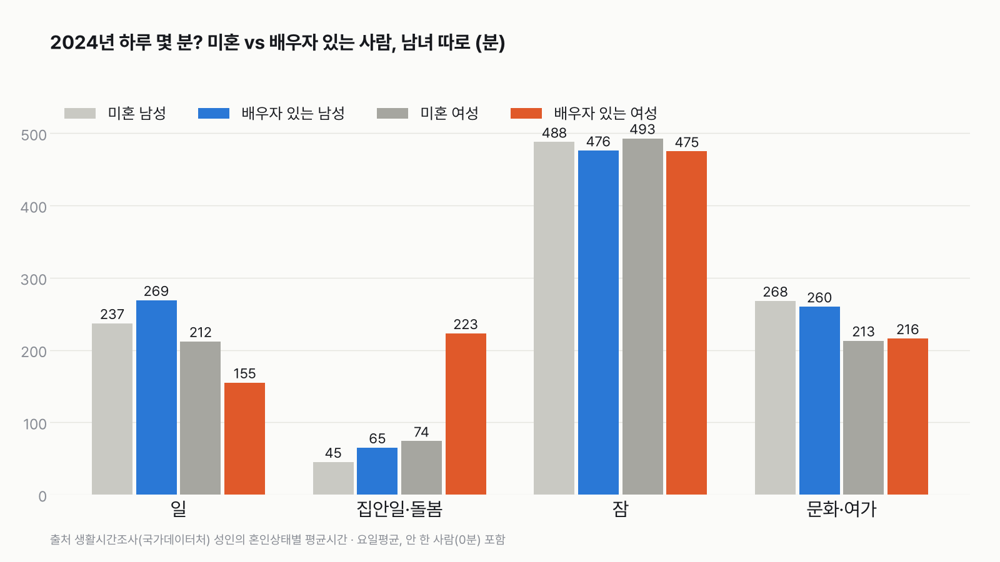
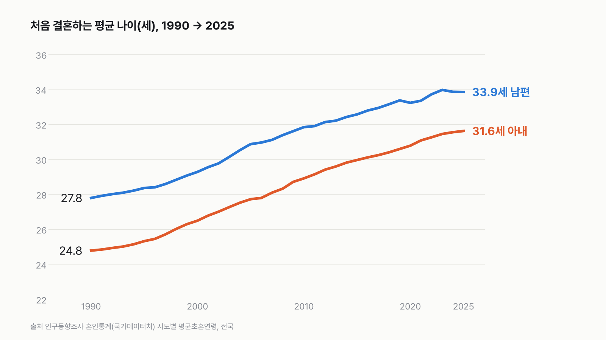
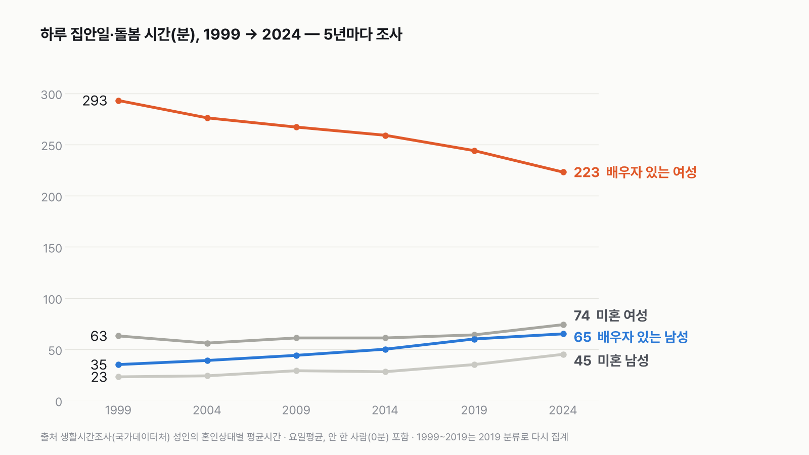
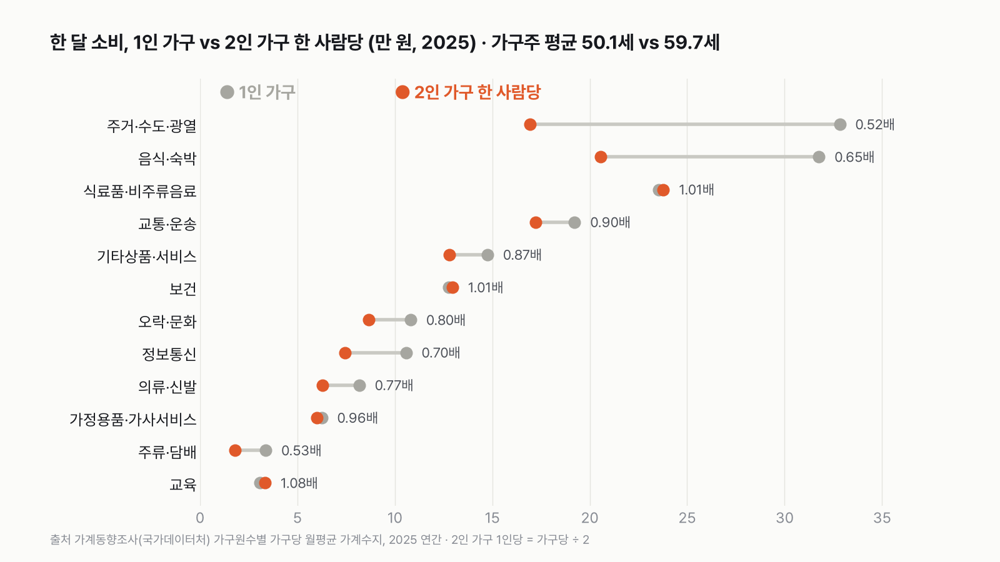
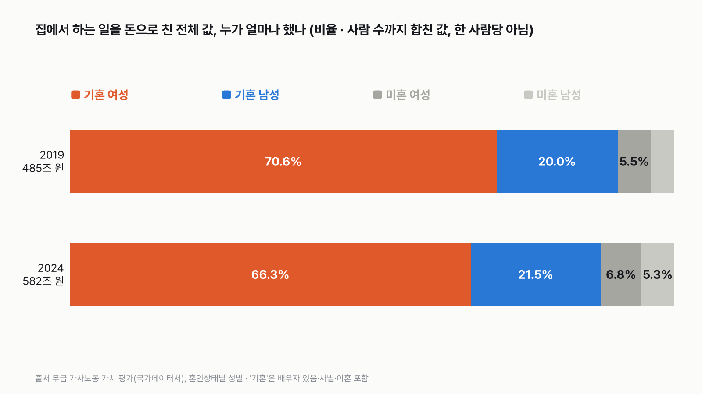

실험맨, 결혼하면 뭐가 달라질까
둘이 사는 집은 한 사람당 돈이 덜 들어요(나이 차이도 함께 들어 있어요). 배우자 있는 사람은 집안일·돌봄 시간이 더 길고, 특히 배우자 있는 여성은 미혼 여성보다 하루 두 시간 반 가까이 더 써요. 25년 동안 남녀 차이는 꾸준히 줄었어요.

3줄 요약
- 2024년 배우자 있는 여성은 하루 집안일·돌봄에 223분을 써요. 미혼 여성(74분)보다 149분 길어요. 배우자 있는 남성은 65분으로, 미혼 남성(45분)보다 20분 길어요.
- 2025년 둘이 사는 집은 한 달에 275만 5천 원, 혼자 사는 집은 177만 1천 원을 써요(1.56배). 한 사람당으로 나누면 둘이 사는 집이 137만 7천 원으로 39만 4천 원(0.78배) 적어요. 두 집은 가구주 평균 나이가 59.7세와 50.1세로 달라서, 나이 차이도 함께 들어 있는 숫자예요.
- 집에서 하는 일을 돈으로 치면 2024년 나라 전체 582조 원이에요. 그중 66.3%가 기혼 여성(사별·이혼 포함), 21.5%가 기혼 남성의 값이에요. 사람 수까지 합친 값이고, 2019년(70.6%, 20.0%)보다 차이가 조금 줄었어요.

언제: 처음 결혼하는 나이, 35년 새 6~7살 늦어졌어요
2025년 처음 결혼한 남편의 평균 나이는 33.9세, 아내는 31.6세예요. 1990년에는 27.8세와 24.8세였어요. 35년 동안 남편은 6.1살, 아내는 6.8살 늦어졌어요. 둘의 나이 차이는 3.0살에서 2.2살로 줄었어요. 실험맨이 결혼한다면 30대 초중반이 평균이에요.
하루: 배우자 있는 사람은 잠이 조금 짧아요
실험맨의 하루를 미혼과 배우자 있는 사람으로 나눠 보면, 가장 먼저 잠이 달라요. 2024년 미혼 남성은 하루 488분을 자고, 배우자 있는 남성은 476분을 자요. 여성은 493분과 475분이에요. 남녀 모두 배우자 있는 쪽이 12~18분 덜 자요. 밥 먹는 시간은 반대로 배우자 있는 쪽이 길어요. 남성은 105분과 121분, 여성은 107분과 116분이에요.
일: 배우자 있는 남성은 더 길고, 배우자 있는 여성은 더 짧아요
일(돈 버는 일)에 쓰는 시간은 남녀가 다른 방향이에요. 배우자 있는 남성은 하루 269분으로 미혼 남성(237분)보다 32분 길어요. 배우자 있는 여성은 155분으로 미혼 여성(212분)보다 57분 짧아요. 이 시간은 일을 안 한 사람(0분)까지 넣은 평균이라, 일하는 사람의 비율이 다르면 크게 달라져요. 그날 일을 한 사람의 비율은 배우자 있는 남성 66.6%, 배우자 있는 여성 45.2%예요.
집안일·돌봄: 배우자 있는 여성 223분, 미혼 여성 74분
집안일과 돌봄을 더하면 차이가 가장 커요. 배우자 있는 여성은 하루 223분, 미혼 여성은 74분이에요. 149분, 두 시간 반 가까이 길어요. 남성은 65분과 45분으로 20분 차이예요. 1년으로 늘리면 배우자 있는 여성은 1,357시간, 배우자 있는 남성은 395시간이에요. 미혼 여성은 450시간, 미혼 남성은 274시간이에요.
이건 집안일이 덜 중요하다는 뜻이 아니에요. 누가 하루를 어떻게 나눴는지를 잰 결과예요. 누가 더 해야 한다는 얘기도 아니에요. 배우자 있는 사람에게는 아이를 돌보는 시간이 더해지고, 나이 구성도 미혼과 달라요. 그런 차이가 함께 들어 있는 숫자예요.
그날 집안일을 한 사람만 보면
평균에는 그날 집안일을 하지 않은 사람(0분)도 들어 있어요. 그날 가정관리를 조금이라도 한 사람만 보면 모습이 조금 달라요. 배우자 있는 여성은 97.0%가 했고, 한 사람이 평균 186분을 썼어요. 배우자 있는 남성은 62.3%가 했고, 한 사람이 78분을 썼어요. 미혼 남성(64.5%, 68분)과 비율은 거의 같고, 시간은 10분 길어요. 돌봄은 배우자 있는 여성 33.8%가 했고, 한 사람이 125분을 썼어요.

25년 변화: 배우자 있는 남성 35분 → 65분, 여성 293분 → 223분
1999년부터 2024년까지 5년마다 보면 방향이 한 번도 바뀌지 않았어요. 배우자 있는 남성의 집안일·돌봄은 35분에서 65분으로 30분 늘었어요. 배우자 있는 여성은 293분에서 223분으로 70분 줄었어요. 둘의 차이는 258분에서 158분이 됐어요. 같은 기간 배우자 있는 남성의 일 시간은 364분에서 269분으로, 여성은 191분에서 155분으로 줄었어요. 미혼도 남녀 모두 집안일·돌봄이 늘었어요(남성 23분 → 45분, 여성 63분 → 74분). 이 흐름은 이 사이트의 「배우자 있는 남녀 집안일 시간」 글에 더 자세히 있어요.
맞벌이 부부: 일+집안일, 남편 393분·아내 448분
배우자 있는 가구를 맞벌이와 외벌이로 나눠 보면, 둘 다 일하는 부부의 하루가 보여요. 2024년 맞벌이 남편은 일 334분, 집안일·돌봄 59분이에요. 맞벌이 아내는 일 277분, 집안일·돌봄 171분이에요. 일과 집안일·돌봄을 더하면 남편 393분, 아내 448분이에요. 2019년에는 집안일·돌봄이 남편 54분, 아내 187분이었어요. 5년 사이 차이가 133분에서 112분으로 줄었어요.
남편만 일하는 외벌이 가구는 남편이 일 324분에 집안일·돌봄 57분, 아내가 일 5분에 집안일·돌봄 317분이에요. 더하면 남편 381분, 아내 322분이에요. 맞벌이든 외벌이든 남편의 집안일·돌봄은 하루 1시간 안팎이에요.

돈: 둘이 사는 집은 가구당 1.56배, 한 사람당 0.78배
2025년 혼자 사는 집은 한 달에 177만 1천 원을 썼어요(소비지출). 둘이 사는 집은 275만 5천 원으로 1.56배예요. 사람은 두 배인데 돈은 두 배가 안 돼요. 한 사람당으로 나누면 137만 7천 원이에요. 혼자 사는 집보다 한 달 39만 4천 원, 1년이면 473만 원 적어요. 다만 둘이 사는 집의 가구주는 평균 59.7세로 혼자 사는 집(50.1세)보다 아홉 살 넘게 많고, 부부가 아닌 2인 가구도 들어 있어요. 이 차이는 '둘이 살아서'만이 아니라 나이 차이도 함께 담긴 숫자예요. 병원비(보건)가 한 사람당으로도 줄지 않는 데(1.01배)에도 이 나이 차이가 함께 들어 있어요.
가장 크게 적은 건 집, 그다음은 외식
항목별로 한 사람당 금액을 보면 '같이 쓰는 것'이 크게 적어요. 월세·관리비·전기·가스 같은 집에 드는 돈(주거·수도·광열)은 혼자 사는 집이 32만 8천 원, 둘이 사는 집은 한 사람당 16만 9천 원이에요(0.52배). 집 한 채를 둘이 나눠 쓰는 것과 같은 모습이에요. 이 금액에는 집값이나 전세 보증금, 대출 원금은 들어 있지 않아요. 외식·숙박은 31만 8천 원과 20만 6천 원(0.65배), 통신비는 0.70배, 술·담배는 0.53배예요.
반대로 장보기(식료품)는 23만 5천 원과 23만 8천 원으로 거의 같아요. 그래서 혼자 사는 집은 외식(31만 8천 원)이 장보기보다 크고, 둘이 사는 집은 한 사람당 장보기(23만 8천 원)가 외식(20만 6천 원)보다 커요. 교육(1.08배)도 한 사람당으로 줄지 않아요.

집안일의 값: 582조 원, 그중 66.3%가 기혼 여성의 값
국가데이터처는 집에서 하는 일(무급 가사노동)에 같은 일을 하는 사람의 임금을 붙여 돈으로 계산해요. 2024년 나라 전체 평가액은 582조 4천억 원이에요. 2019년 485조 5천억 원보다 97조 원 늘었어요. 이 중 기혼 여성이 386조 3천억 원(66.3%), 기혼 남성이 125조 4천억 원(21.5%)이에요. 미혼 여성은 39조 5천억 원(6.8%), 미혼 남성은 31조 1천억 원(5.3%)이에요. 한 사람당 값이 아니고, 사별한 사람(여성이 훨씬 많아요)도 '기혼'에 들어 있어요.
5년 사이 기혼 여성의 비율은 70.6%에서 66.3%로 줄고, 기혼 남성은 20.0%에서 21.5%로 늘었어요. 앞에서 본 시간 변화와 같은 방향이에요. 미혼 남녀의 비율도 모두 늘었지만(여성 5.5% → 6.8%, 남성 3.8% → 5.3%), 이 표만으로는 미혼 인구가 늘어서인지 한 사람의 집안일이 늘어서인지 나눌 수 없어요. 기혼 여성의 평가액 386조 3천억 원 가운데 일하지 않는 기혼 여성이 226조 8천억 원, 일하는 기혼 여성이 159조 5천억 원이에요.
내 하루와 나란히 놓으면
혼자 사는 집과 둘이 사는 집을 나란히 놓으면, 한 사람당 생활비는 둘이 사는 쪽이 한 달 40만 원 가까이 적어요(나이 차이가 함께 들어 있어요). 배우자 있는 사람은 집안일·돌봄 시간이 더 길고, 그 시간은 아직 여성 쪽이 더 길어요. 내 하루의 집안일 시간을 이 숫자 옆에 놓아 보면, 우리 집이 평균보다 어느 쪽에 있는지 보여요.
다르게 세면
| 이렇게 세면 | 결과 |
|---|---|
| 집안일·돌봄을 '그날 한 사람만'의 평균(행위자평균시간)으로 | 가정관리: 배우자 있는 여성 186분, 남성 78분, 미혼 여성 93분, 미혼 남성 68분 |
| 소비지출 대신 '가계지출'(세금·연금·이자 포함)로 | 1인 가구 241만 3천 원, 2인 가구 374만 2천 원(한 사람당 187만 1천 원, 0.78배) |
| 맞벌이 대신 남편만 일하는 외벌이 부부로 | 일+집안일·돌봄 남편 381분, 아내 322분 |
| 집안일 값을 2019년으로 | 기혼 여성 70.6%, 기혼 남성 20.0% |
이 숫자는 어디서 왔나요
출처
기준일
- 인구동향조사 평균초혼연령: 1990~2025년이에요.
- 생활시간조사: 2024년(5년마다 조사, 1999~2024년), 맞벌이·외벌이 표는 2019·2024년이에요.
- 가계동향조사: 2025년 연간이에요.
- 무급 가사노동 가치 평가: 2019·2024년이에요.
국가데이터처인구동향조사
- 시도별 평균초혼연령KOSIS DT_1B83A05
1990~2025년, 전국, 남편·아내
국가데이터처생활시간조사
국가데이터처가계동향조사
- 가구원수별 가구당 월평균 가계수지(전국, 1인 이상)KOSIS DT_1L9V153원본 보기
2025년 연간, 1인 가구 vs 2인 가구, 12개 항목, 가구주 평균 나이
국가데이터처무급 가사노동 가치 평가
- 혼인상태별 성별(행동분류별·취업여부별) 무급 가사노동 평가액KOSIS DT_1HP055원본 보기
2019·2024년, 나라 전체 평가액(10억 원)과 그 안의 비율
국가데이터처
- 생활시간조사 통계설명자료 KOSIS 표 화면의 통계설명KOSIS DT_1TS202016원본 보기
조사 대상(만 10세 이상 가구원), 평균시간·행위자평균시간 정의
어떻게 셌나요
- 배우자 있는 실험맨은 생활시간조사의 '유배우'(지금 배우자가 있는 사람)예요. 사별·이혼한 사람은 넣지 않았어요.
- 혼자인 실험맨은 '미혼'이에요. 미혼이 모두 혼자 사는 건 아니에요. 부모와 함께 사는 사람도 들어 있어요. 이 표에는 '혼자 사는지'가 없어서 미혼으로 대신했어요.
- 생활시간조사의 조사 대상은 만 10세 이상 가구원이에요. 표 이름의 '성인'이 몇 세 이상인지는 통계설명자료에서 찾지 못했어요.
- 하루 시간은 평균시간이에요. 그날 그 일을 안 한 사람(0분)까지 넣은 평균이고, 평일·토요일·일요일을 고르게 섞은 요일평균이에요.
- 집안일은 가정관리(음식 준비, 설거지, 빨래, 청소, 장보기 등), 돌봄은 가족·가구원 돌보기예요. 본문의 '집안일·돌봄'은 둘을 더한 값이에요. '일+집안일·돌봄'에는 출퇴근 같은 이동 시간이 들어 있지 않아요.
- 돈은 가계동향조사의 1인 가구와 2인 가구예요. 2인 가구가 모두 부부는 아니에요(부모와 자녀, 형제 등도 있어요). 표의 '전체가구' 값을 썼어요.
- 가구당은 표 값 그대로예요.
- 한 사람당은 가구당 값을 2로 나눴어요. 두 사람이 똑같이 나눠 쓴다고 본 거예요.
- 집안일의 값은 국가데이터처가 무급 가사노동 시간에 비슷한 일을 하는 사람의 임금을 붙여 계산한 평가액이에요. 이 표에는 나라 전체 합계만 있어서, 한 사람당 금액은 내지 않고 그 안의 비율을 봤어요. 비율은 사람 수까지 합친 값이에요. 합계에는 자원봉사·참여활동 9조 3천억 원도 들어 있어요. 이 표의 '기혼'은 배우자 있음·사별·이혼을 모두 포함해요. 생활시간조사의 '유배우'와 정의가 달라요.
- 혼인상태별 차이는 함께 나타나는 차이예요. 결혼이 원인이라는 뜻은 아니에요. 그래서 "결혼하면 ~해진다"가 아니라 "배우자 있는 사람은 ~예요"라고 썼어요.
한계 8가지
이 데이터로 말할 수 없는 것
- 영상의 30대 캐릭터는 그림이고, 숫자는 모든 나이 평균이에요(초혼 나이만 처음 결혼한 사람의 평균이에요).
- 미혼은 '혼자 사는 사람'이 아니에요. 부모와 사는 미혼도 들어 있어서, 미혼의 집안일 시간에는 부모가 대신 해 주는 집안일이 빠져 있을 수 있어요.
- 미혼과 배우자 있는 사람은 나이 구성과 아이 유무가 크게 다를 수 있어요. 이 표는 혼인상태를 나이와 함께 나누지 않아서, 같은 나이끼리 비교하지 못했어요. 이 글의 차이에는 결혼 말고도 나이·아이·일자리 차이가 함께 들어 있어요.
- 2인 가구에는 부부가 아닌 집(부모와 자녀, 형제 등)도 들어 있어요. 2인 가구 가구주는 평균 59.7세로 1인 가구(50.1세)보다 많아요.
- 한 사람당 금액은 두 사람이 똑같이 쓴다고 본 어림이에요.
- 무급 가사노동 평가액은 '기혼'에 사별·이혼이 들어 있어서, 생활시간조사의 '유배우'와 바로 비교할 수 없어요. 비율은 사람 수까지 합친 값이라, 한 사람이 얼마나 했는지를 보여 주지 않아요. 또 이 표는 2019년 수치가 2026년 4월에 고쳐졌고, 1999~2014년 값은 2026년 12월에 다시 실릴 예정이에요(표 주석). 그래서 2019·2024년만 썼어요.
- 생활시간조사 1999~2019년 값은 2019년 행동분류로 다시 집계된 값이에요. 예전에 발표된 숫자와 다를 수 있어요.
- 표마다 기준 연도가 달라요(초혼 나이 2025년, 시간 2024년, 돈 2025년, 집안일 값 2024년). 한 숫자로 섞지 않았어요.
새 글 나오면 받아 보기
피드 리더 앱에 이 사이트 주소를 한 번 넣어 두면, 새 글이 올라올 때 앱에 떠요. 가입이나 메일 주소는 필요 없어요.
받는 법 보기
- 피드 리더 앱을 하나 골라요. 새 글을 모아 보여 주는 앱이에요. 예를 들면 Feedly나 Inoreader가 있어요. 둘 다 무료고 웹·휴대폰에서 써요.
- 앱에서 '구독 추가'(+)를 누르고 아래 주소를 붙여 넣어요.
- 끝이에요. 새 글이 올라오면 앱 목록에 떠요.
https://protofu.github.io/opendata-insight/feed.xmlFeedly를 쓴다면 여기를 눌러 바로 추가할 수도 있어요.